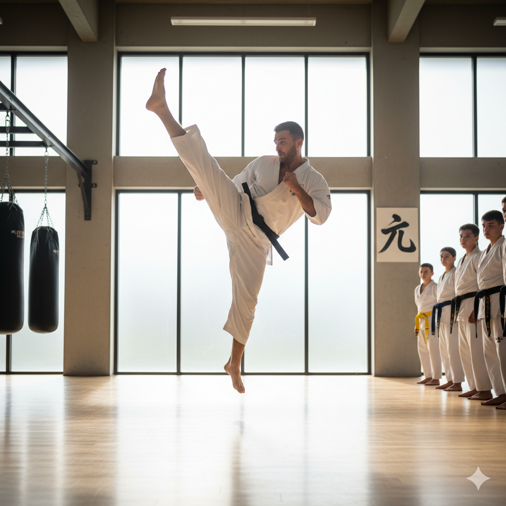
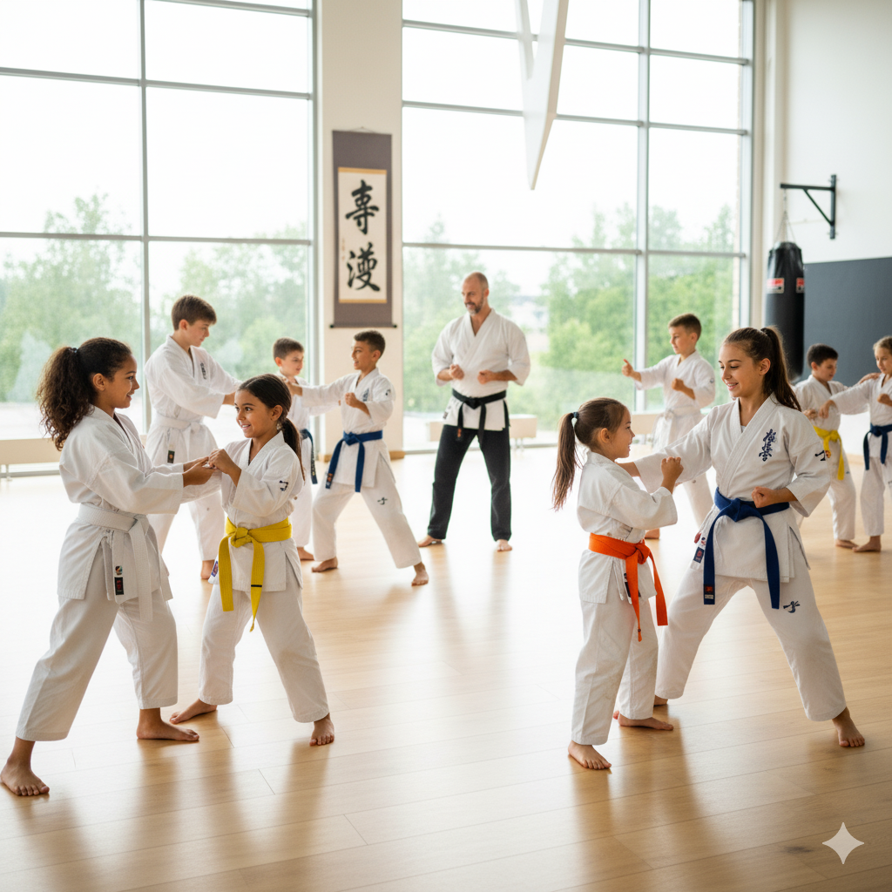
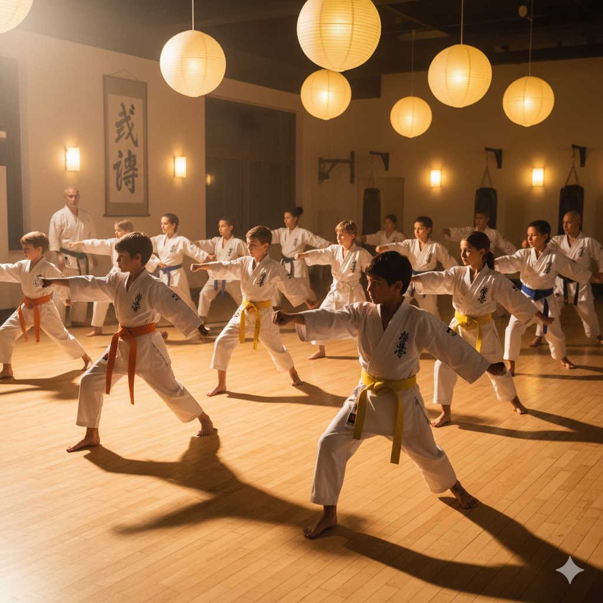
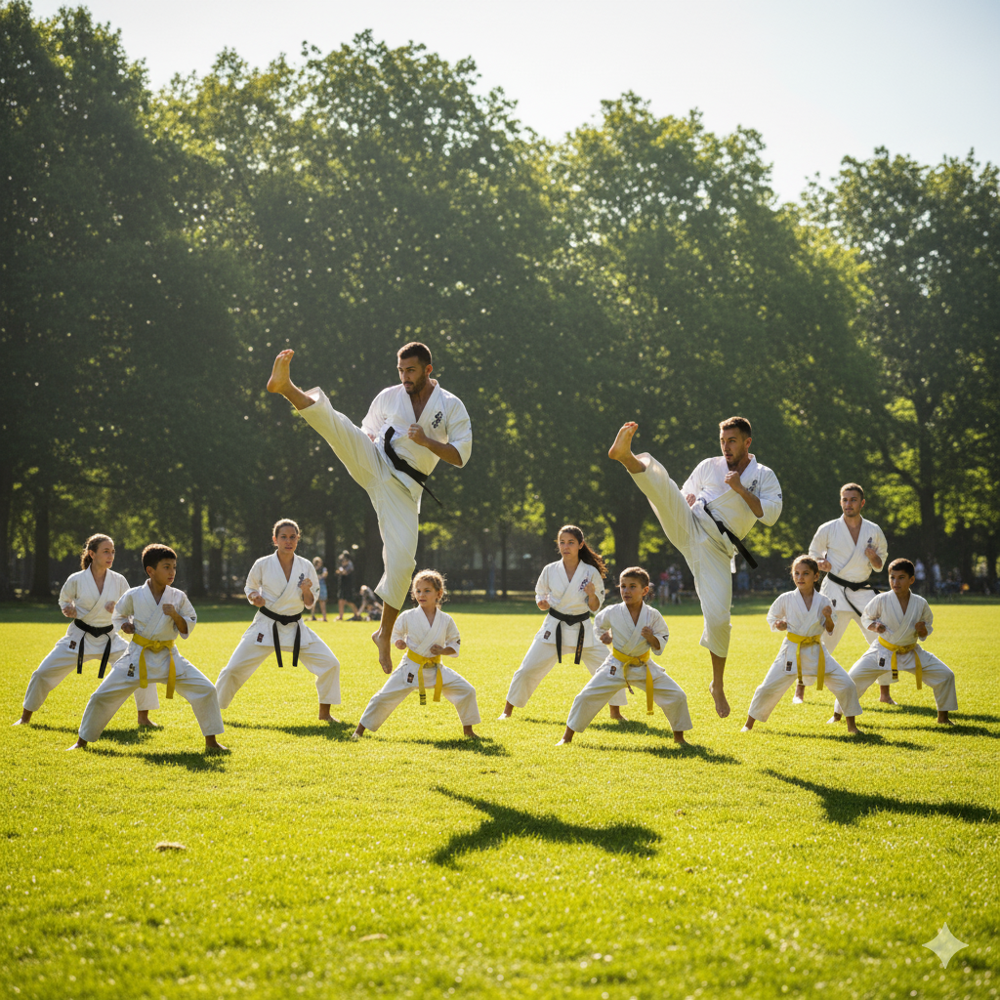
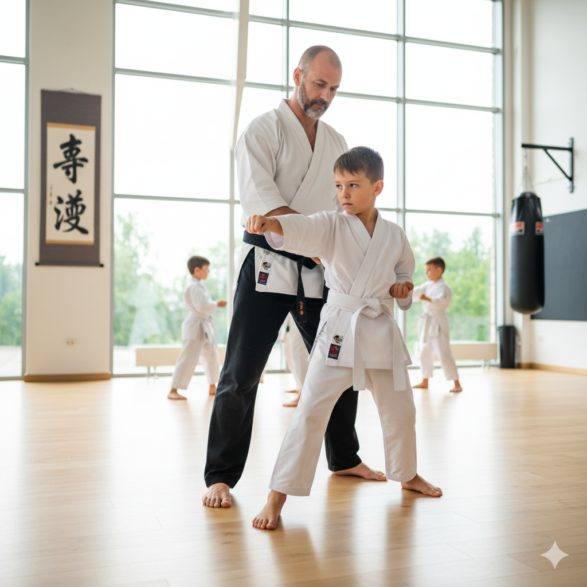
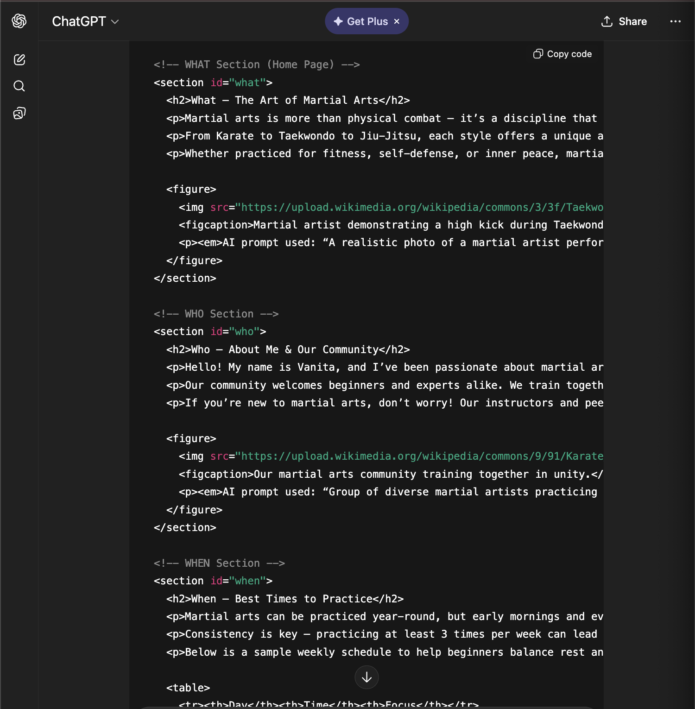
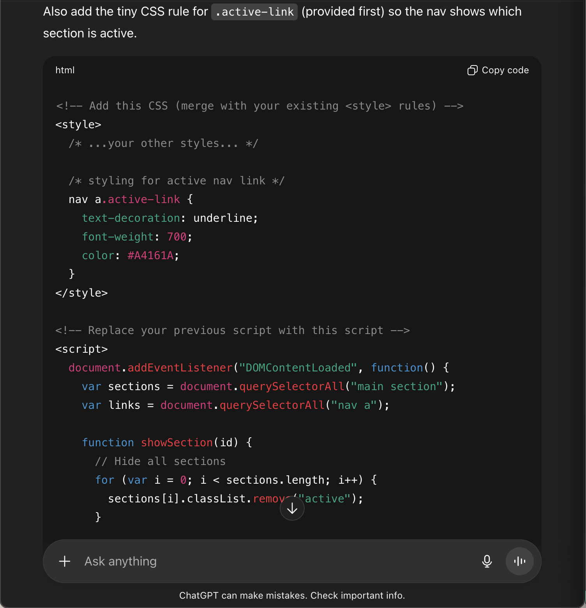

What 🤔 – The Art of Martial Arts
Martial arts is more than physical combat — it’s a discipline that strengthens the body, sharpens the mind, and shapes the spirit. It teaches focus, self-control, and respect for others.
From Karate to Taekwondo to Jiu-Jitsu, each style offers a unique approach to self-defense and personal growth. The beauty of martial arts lies in its adaptability — there’s something for every age and fitness level.
Whether practiced for fitness, self-defense, or inner peace, martial arts continues to unite people across cultures and generations.

AI prompt used: “A realistic photo of a martial artist performing a high kick in a modern dojo with natural lighting.”
Who 🤷♀️ – About Me & Our Community
Hello! My name is Vanita, and I’ve been passionate about martial arts for years. I started training to improve my confidence and fitness, and it quickly became a lifestyle.
Our community welcomes beginners and experts alike. We train together, grow together, and push each other to become stronger — both mentally and physically.
If you’re new to martial arts, don’t worry! Our instructors and peers are always ready to guide you every step of the way.

AI prompt used: “Group of diverse martial artists practicing together in a dojo, smiling and supporting each other.”
When ⏰ – Best Times to Practice
Martial arts can be practiced year-round, but early mornings and evenings are the best times for focused training. Cooler weather helps with endurance and flexibility.
Consistency is key — practicing at least 3 times per week can lead to noticeable improvements in form and stamina.
Below is a sample weekly schedule to help beginners balance rest and practice:
| Day | Time | Focus |
|---|---|---|
| Monday | 6:00–7:30 PM | Kicks & Footwork |
| Wednesday | 6:00–7:30 PM | Forms & Technique |
| Friday | 5:30–7:00 PM | Sparring & Conditioning |

AI prompt used: “A warm-lit dojo during an evening martial arts class with students practicing forms.”
Where📍 – Best Training Locations
While professional dojos offer the best equipment and instruction, you can also train outdoors or at home with minimal gear.
Many parks, gyms, and recreation centers host open martial arts sessions for all levels. Online classes are also a great option for beginners.
Check local martial arts schools or fitness centers for introductory trials — many offer the first class free!

AI prompt used: “Martial artists training outdoors in a sunny park with grass and trees in the background.”
How 🕺 – Getting Started
- Choose a martial art style that fits your goals — for example, Taekwondo for kicks, Judo for throws, or Karate for strikes.
- Start slow. Focus on mastering the basics before moving on to advanced moves.
- Combine your training with proper nutrition, rest, and stretching routines to prevent injury.

AI prompt used: “Beginner martial artist learning a fighting stance under instructor guidance, bright dojo background.”
Why 🥋 – The Purpose Behind the Practice
Martial arts teaches patience, humility, and perseverance. Each lesson goes beyond the mat and into everyday life.
Through discipline and respect, practitioners find peace, balance, and confidence that influence all aspects of their lives.
It’s not just about fighting — it’s about becoming the best version of yourself.
AI prompt used: “Martial artist meditating in lotus position inside a quiet dojo with soft lighting.”
AI Prompts 🤖 - Prompts used to generate text
Throughout this website, I have used AI for generating images and information for all of the sections.
For the images, I have included the prompts under each of the images.
As for the text underneath the sections, I have used this prompt:
- "help me create a martial arts hobby website where the sections include: "Who (About / About Me / Who We Are), What (Home page – loads first, explains the hobby), When (Best Times / Schedule / Seasons), Where (Best Locations / Places), How, Why." And for each section, they should: "Contain at least three items (e.g., paragraphs, figures, tables, forms, slideshow). Include at least one figure (image + caption + italicized paragraph explaining the AI prompt used).""

From this prompt, I have copied and pasted the text (h2, paragraph elements, and figure elements) for each of the sections.
As for the JS/CSS script for the nav element, I have used this prompt to create the code for it:
- "Add links in the header/nav to switch between sections. Use CSS so only the selected section is visible at a time (like a single-page app). Use a unique divider symbol (emoji or special character) different from your other pages. The What (Home) section should be the default visible page. This is what i have so far (attached document)"

I also provided ChatGPT with the previous code I previously had for the nav elements.